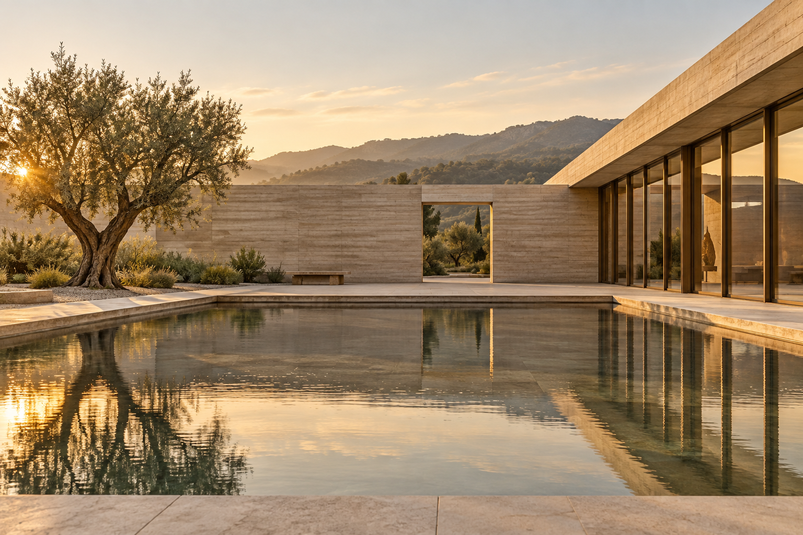
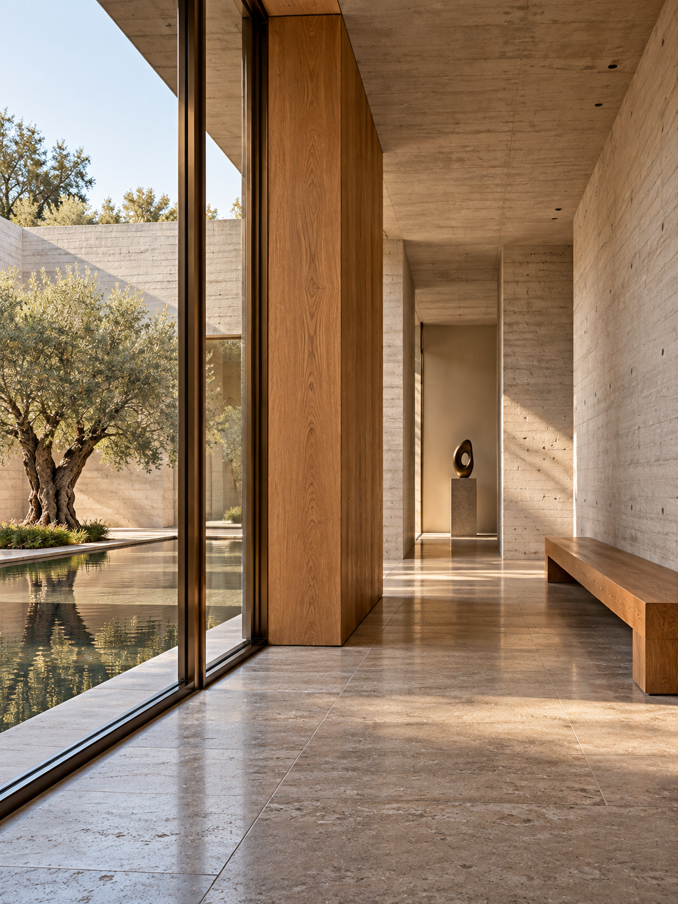
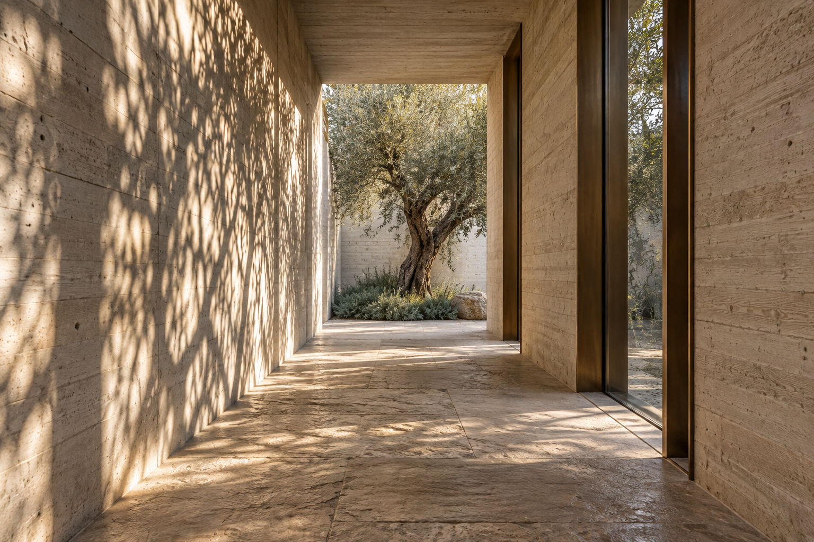

The Quiet
Courtyard

An open room for the city. A sequence of walls, water and shade turns an ordinary threshold into a place to pause.
The concept places a shared courtyard at the heart of a small cultural pavilion. Enclosure and openness sit side by side: a quiet arrival, a sheltered gallery, and a generous room beneath the sky.
NUMEO — SELF-INITIATED CONCEPT

View image +The spatial idea
A place
to pause.
Not every space needs to announce itself.
Some simply make room for us to stay.


View image +Material & atmosphere
A restrained
material language.
- Board-formed concrete
- A tactile enclosure, carrying the imprint of its making.
- Oak & bronze
- Warm points of contact against the mineral envelope.
- Water & shade
- A changing surface that gives the courtyard its rhythm.